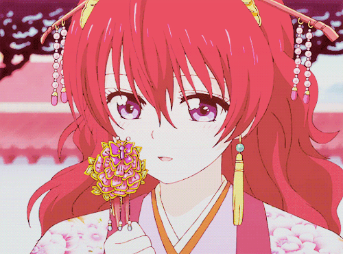
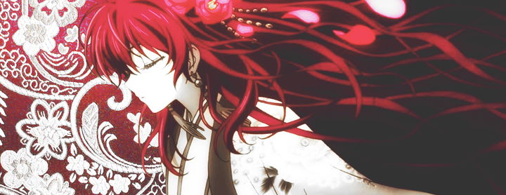

Yona

Yona é a protagonista da série de mangá e anime, Akatsuki no Yona. Ela é a princesa do Reino Kouka, a única herdeira do Imperador Il e da Rainha Kashi, e a reencarnação do Rei Hiryuu. Em seu aniversário de 16 anos, ela foi forçada a fugir do Castelo Hiryuu como fugitiva depois que seu pai foi assassinado por seu amado primo Soo-Won, que por sua vez usurpou o trono e se tornou rei.

Yona é muito adaptável e tem um comportamento doce e um forte senso de convicção. Em sua jornada, ela mostra uma vontade absoluta de aprender e permanece idealista em situações extremamente difíceis. Ela foi inicialmente egoísta e exigente com os outros, o que é notado pela primeira vez quando Yoon a repreende por não agradecê-lo por cuidar de Hak. Ela finalmente aprende a mostrar apreço pelos outros através de suas viagens.
Apesar de sua história trágica, Yona mantém uma visão positiva da vida e escolhe ajudar os necessitados. Durante suas viagens, ela se torna mais madura e autoconfiante. Ela começa a superar suas inseguranças, percebendo o que é mais valioso na vida durante sua jornada com Hak, Yoon e os quatro dragões.